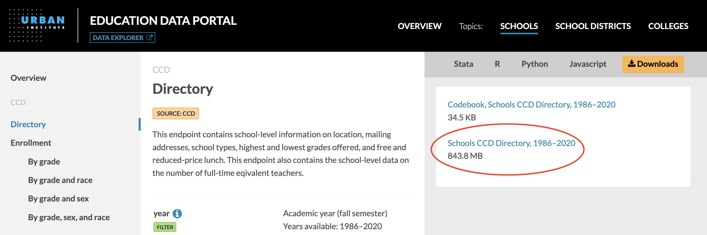
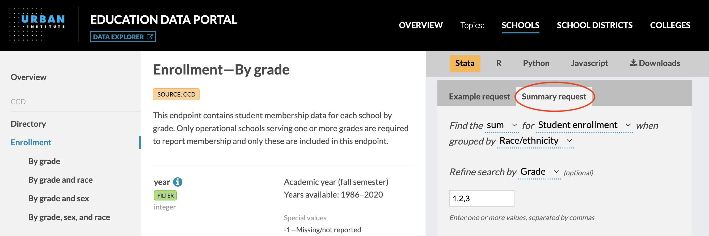

About these FAQs
The Urban Institute’s Education Data Portal allows users to view data endpoints and select summary endpoints directly in their web browser. Users can access this application programming interface (API) by directly hitting a URL endpoint or by using Stata or R.
This FAQ guide provides examples for interacting with the API in more complex ways than described in the API documentation. We offer suggested syntax in Python, R, Stata, and JavaScript for each of these examples. Please reference the official documentation for the full list of endpoints and variables available in the portal. The R package and Stata package also include additional documentation and examples for interacting with the API.
Why am I getting only 10,000 results when I make an API call?
The API limits the number of records returned per page to 10,000. This ceiling prevents large data requests from slowing down the API for other users. To pull a full response that spans multiple pages, you will need to iterate over the pages and append the results together.
The R and Stata packages handle this process for you.
import requests
import pandas as pd
# Specify endpoint URL
url = "https://educationdata.urban.org/api/v1/schools/ccd/directory/2020/"
# Loop over pages
response = requests.get(url).json()
data = response["results"]
while response["next"]:
response = requests.get(response["next"]).json()
data.extend(response["results"])
# Convert response to pandas dataframe
df = pd.DataFrame(data)# The educationdata R package will take care of appending all pages for you
library(educationdata)
data <- get_education_data(
level = "schools",
source = "ccd",
topic = "directory",
filters = list(year = 2020)
)# The educationdata Stata package will take care of appending all pages for you
educationdata using "school ccd directory", sub(year=2020)// Specify endpoint URL
let url = "https://educationdata.urban.org/api/v1/schools/ccd/directory/2020/"
let data = []
const getData = async (url) => {
// Get first page of data
const response = await fetch(url);
const json = await response.json();
// Add new data to our list
data = data.concat(json.results);
// If there is another page, recursively loop over it
if (json.next) {
await getData(json.next);
}
}
// Run our function
getData(url)How can I pull large data requests more quickly?
For large data requests, it may be faster to download the full dataset as a CSV file, rather than using the API endpoints. You can find the link to the relevant CSV file in the API documentation under the “Downloads” tab. You can also click on the link to download the CSV file directly to your computer.

A single CSV file may include data spanning multiple API endpoints (e.g., CCD enrollment data disaggregated by grade, sex, and race for a given year are all included in the same CSV file). You may need to filter (e.g., remove non-total rows or subset specific years) to ensure that the records returned from a particular CSV file match the aggregation in a particular API endpoint.
The relevant functions in the R and Stata packages include a csv option to access data using this approach.
import pandas as pd
# Read all CCD directory data since 1986
df = pd.read_csv("https://educationdata.urban.org/csv/ccd/schools_ccd_directory.csv")library(educationdata)
# Specify the csv option in the R package
data <- get_education_data(
level = "schools",
source = "ccd",
topic = "directory",
csv = TRUE
)# Specify the csv option in the Stata package
educationdata using "schools ccd directory", csv// We'll stream data from a remote CSV.
//
// BEWARE: Some of these files are quite large, and you may
// run into allocation issues if you save the entire contents
// of a file larger than 512MB into memory.
//
// In that case, handle each line of data
// individually and do not write all the data
// to an object.
// Import packages we'll need from node. (You may have other preferences)
import csvParser from "csv-parser"
import axios from "axios"
// CSV data is stored at this URL
const myUrl = "https://educationdata.urban.org/csv/ccd/schools_ccd_directory.csv";
// Where we'll stream our resulting data to for later use
const results = []
// Create a data stream from our url with the axios package
const {data} = await axios({
method: "GET",
url: myUrl,
responseType: "stream"
})
// Pipe that stream through a lightweight CSV parser package
// to handle step by step. We'll handle the "data" and "end" events.
data.pipe(csvParser())
// For each line of data from the CSV
.on("data", (data => {
results.push(data)
}
))
// For when we're done parsing the file
.on("end", (err) => {
if (err) {
console.log("An error has occurred")
} else {
// Show the first line,
// or assign a callback function to handle the data.
console.log("final results: ",results[0]);
}
})How can I pull aggregated statistics more quickly?
The API includes summary endpoints that provide rapid, customized access to aggregated statistics, such as averages, medians, or sums. For many analyses, these summary endpoints will be orders of magnitude faster than pulling the raw records and performing the summary aggregations. The general form of a summary API call is as follows:
https://educationdata.urban.org/api/v1/{section}/{source}/{topic}/summaries?var={var}&stat={stat}&by={by}
Additional filters can be added to summary API calls, and data tables have been prejoined against their associated directory file, providing additional options for the by and filter arguments.
For detailed information and usage examples of the summary endpoints, see this blog post and this repository. You can also use the “Summary request” tab in the API documentation to build simple summary requests using a graphical interface. Although not displayed in this interface, you can also include multiple grouped variables and multiple filters, as shown below.

The summary endpoint functionality has been integrated into the R and Stata packages providing simplified syntax through the get_education_data_summary() function and summaries option for R and Stata, respectively.
As an example, to sum student enrollment by state and race for schools in Illinois (state FIPS = 17) and Wisconsin (state FIPS = 55) for 2018-20, you could use the following syntax:
import requests
# Specify base URL
url = "https://educationdata.urban.org/api/v1/schools/ccd/enrollment/summaries"
# Specify parameters as a dictionary
payload = {
"stat": "sum",
"by": "fips,race",
"var": "enrollment",
"fips": "17,55",
"year": "2018,2019,2020"
}
# Pass parameters into API request
response = requests.get(url, params=payload).json()
data = response["results"]library(educationdata)
df <- get_education_data_summary(
level = "schools",
source = "ccd",
topic = "enrollment",
stat = "sum",
var = "enrollment",
by = list("fips", "race"),
filters = list(fips = list(17,55),
year = 2018:2020)
)educationdata using "school ccd enrollment", summaries(sum enrollment by fips race) sub(fips=17,55 year=2018,2019,2020)// Data is stored at this URL object
const myUrl = new URL("https://educationdata.urban.org/api/v1/schools/ccd/enrollment/summaries");
// Use searchParams to append our filters to the URL
myUrl.searchParams.append("stat","sum")
myUrl.searchParams.append("by","fips,race")
myUrl.searchParams.append("var","enrollment")
myUrl.searchParams.append("fips","17,55")
myUrl.searchParams.append("year","2018,2019,2020")
// Pass request to API and pull our data down
const response = await fetch(myUrl.href);
const data = await response.json();How can I specify multiple values within a filter in an API call?
A comma (,) can be used to pass multiple values into a filter within an endpoint URL. For example, to pull 2020 CCD directory data for schools in Illinois (state FIPS = 17) and Wisconsin (state FIPS = 55), you would include the query string ?fips=17,55:
https://educationdata.urban.org/api/v1/schools/ccd/directory/2020?fips=17,55
When using the R and Stata packages, you can pass a comma-separated list of values to include into the filters argument or sub option.
import requests
# Specify base URL
url = "https://educationdata.urban.org/api/v1/schools/ccd/directory/2020"
# Specify filters as a dictionary with commas separating multiple values for a key
payload = {"fips": "17,55"}
# Pass filters into API request
response = requests.get(url, params=payload).json()
data = response["results"]library(educationdata)
data <- get_education_data(
level = "schools",
source = "ccd",
topic = "directory",
filters = list(year = 2020,
fips = list(17,55))
)educationdata using "school ccd directory", sub(year=2020 fips=17,55)// Data is stored at this URL object
const myUrl = new URL("https://educationdata.urban.org/api/v1/schools/ccd/directory/2020");
// With searchParams, append a comma-delimited filter
myUrl.searchParams.append("fips","17,55")
// Pass request to API and pull data down
const response = await fetch(myUrl.href);
const data = await response.json();How can I specify multiple filters in an API call?
An ampersand (&) can be used to pass multiple filters as query parameters in an endpoint URL. For example, to pull 2020 CCD directory data for high schools (school level = 3) in Illinois (state FIPS = 17), you would include the query string ?school_level=3&fips=17:
https://educationdata.urban.org/api/v1/schools/ccd/directory/2020?school_level=3&fips=17
The R and Stata packages provide simplified syntax for passing multiple filters into an API call. When using the R package, the filters argument accepts a list of filters. Similarly, you can pass multiple filters in the sub option in the Stata package.
import requests
# Specify base URL
url = "https://educationdata.urban.org/api/v1/schools/ccd/directory/2020"
# Specify filters as a dictionary
payload = {
"school_level": "3",
"fips": "17",
}
# Pass filters into API request
response = requests.get(url, params=payload).json()
data = response["results"]library(educationdata)
data <- get_education_data(
level = "schools",
source = "ccd",
topic = "directory",
filters = list(
year = 2020,
school_level = 3,
fips = 17
)
)educationdata using "school ccd directory", sub(year=2020 school_level=3 fips=17)// Data is stored at this URL object
const myUrl = new URL("https://educationdata.urban.org/api/v1/schools/ccd/directory/2020");
// With searchParams, append multiple filters
myUrl.searchParams.append("school_level","3")
myUrl.searchParams.append("fips","17")
// Pass request to API and pull data down
const response = await fetch(myUrl.href);
const data = await response.json();How can I pull the most recent data for an endpoint without manually specifying the year?
The following metadata endpoint can be used to pull the most recent year of data available on the portal for an endpoint: https://educationdata.urban.org/api/v1/api-endpoints. From that metadata endpoint, you can identify the latest available year by slicing the last four characters of the years_available field for the relevant endpoint. Then, you would pass those four digits into the relevant data endpoint.
This functionality is not directly built into the R package, but example syntax using the httr package is provided below. This functionality is not supported through the Stata package.
import requests
def get_latest_year(endpoint_id):
"""
Get most recent year of available data for a given endpoint.
Use the following metadata endpoint to find a particular endpoint_id:
https://educationdata.urban.org/api/v1/api-endpoints/
Args:
endpoint_id (int): Unique endpoint ID (e.g. 24)
Returns:
str: Latest year (e.g. 2019)
"""
metadata_url = "https://educationdata.urban.org/api/v1/api-endpoints/"
payload = {"endpoint_id": endpoint_id}
response = requests.get(metadata_url, params=payload).json()
data = response["results"]
latest_year = data[0]["years_available"][-4:] # Get last 4 digits
return latest_year
# Get the latest year for the school-level CCD directory endpoint
latest_year = get_latest_year(endpoint_id=24)
# Generate the endpoint for the latest school-level CCD directory endpoint
url = f"https://educationdata.urban.org/api/v1/schools/ccd/directory/{latest_year}"
response = requests.get(url).json()
data = response["results"]library(educationdata)
#' Get most recent year of available data for a given endpoint.
#'
#' Use the following metadata endpoint to find a particular endpoint_id:
# https://educationdata.urban.org/api/v1/api-endpoints/
#'
#' @param endpoint_id Unique endpoint ID (e.g. 24)
#'
#' @return Latest year (e.g. 2019)
get_latest_year <- function(endpoint_id) {
metadata_url <- "https://educationdata.urban.org/api/v1/api-endpoints/"
response <- httr::GET(metadata_url, query = list(endpoint_id = endpoint_id))
years_available <- httr::content(response)$results[[1]]$years_available
latest_year <- substr(years_available,
start = nchar(years_available)-3,
stop = nchar(years_available))
return (latest_year)
}
# Get the latest year for the school-level CCD directory endpoint
latest_year <- get_latest_year(endpoint_id=24)
# Pass the latest year into the filter
data <- get_education_data(
level = "schools",
source = "ccd",
topic = "directory",
filters = list(year = latest_year)
)# This functionality is not supported through the Stata package // Create a function to get latest year from endpoint metadata
const getLatestYear = async (endpointId = 24) => {
// Get metadata for the endpoint we'd like to use
const metadataUrl = new URL("https://educationdata.urban.org/api/v1/api-endpoints/")
metadataUrl.searchParams.append("endpoint_id",endpointId)
const response = await fetch(metadataUrl)
const data = await response.json()
// From metadata, pull the latest year we have data for
const yearsAvailable = data.results[0]["years_available"]
const thisLatestYear = yearsAvailable.substring(yearsAvailable.length - 4)
return thisLatestYear
};
// Visit the API-endpoint site to decide which endpoint we want to pursue
const myEndpointId = 24
// Call our function
const latestYear = await getLatestYear(myEndpointId)
// Build a URL accessing only the year of data we specify
const myUrl = "https://educationdata.urban.org/api/v1/schools/ccd/directory/"+latestYear
// Pass request to API to pull latest data down
const response = await fetch(myUrl);
const data = await response.json();What metadata endpoints are available?
Several metadata endpoints that describe the data in the portal may be useful to developers:
https://educationdata.urban.org/api/v1/api-endpoints
Lists general information about each endpoint (e.g., their IDs, URLs, and years available).
https://educationdata.urban.org/api/v1/api-downloads
Lists information about downloadable data files and codebooks for each endpoint. All URLs to direct downloads follow this format: https://educationdata.urban.org/csv/{file_dir}/{file_name}.
https://educationdata.urban.org/api/v1/api-variables
Lists information about each variable in the portal (e.g., their data types and formats, labels, and special values). Each record is a unique variable.
https://educationdata.urban.org/api/v1/api-endpoint-varlist
Lists information about each variable in the portal, broken out by endpoint. Each record is a unique endpoint_id and variable combination.
By using this API, you agree to abide by the Data Policy and Terms of Use of the Education Data Portal.
For general questions or feedback, email us at educationdata@urban.org. For questions or feedback on this FAQ guide, please open an issue on GitHub here.